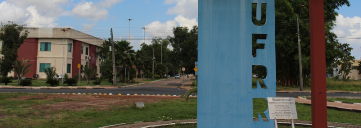

308 vagas - UFRR recebe inscrições da segunda chamada do Auxílio Inclusão Digital até 18/09
A comunidade acadêmica da Universidade Federal de Roraima (UFRR) que tiver interesse em fazer o teste para Covid-19, poderá agendar o procedimento, a partir desta quarta-feira (19), por telefone. A instituição adquiriu dois mil testes rápidos, por meio de recursos próprios.
O agendamento será realizado, em horário comercial, por meio do telefone do Disque Covid: (95) 98104-0852. O material adquirido pela UFRR foi o teste rápido para dosagem de IgM e IgG, qualitativa, contra o vírus Sars-CoV-2.
Podem realizar o agendamento, servidores docentes, técnicos administrativos e terceirizados. Além de alunos dos internatos dos cursos de Medicina e Enfermagem. Após esse grupo, poderão ser testados também os discentes em situação de maior vulnerabilidade social ou exposição a risco. A coleta do material será realizada a partir de quinta-feira (20), na Unidade de Saúde da UFRR, localizada em frente ao Centro de Educação (CEDUC), campus Paricarana.
O agendamento é necessário para evitar aglomeração. Com isso, cada pessoa vai à Unidade apenas no horário marcado. O resultado do teste sai em cerca de 15 minutos. É importante que cada um leve sua própria caneta, para não ter contato com caneta de terceiros, além de usar máscara e manter a higienização para evitar a transmissão do vírus.
A coleta será realizada por uma equipe de profissionais habilitados, sendo formada pelas biomédicas do corpo docente do curso de Medicina da UFRR, professoras Bianca Costa e Fabiana Nakashima.
Conforme explicou a professora Bianca, a testagem em massa é importante, pois, a partir do momento que se faz o inquérito sorológico, gera-se mais segurança, principalmente para os profissionais que estão realizando o trabalho escalonado e de alguma forma estão em trabalho presencial. Assim, realiza-se o diagnóstico precoce, possibilitando o tratamento em fase inicial e reduzindo os casos de óbito.
IgM e IgG - Os exames de anticorpos envolvem a análise de uma amostra (geralmente sangue, soro ou plasma) para mostrar a presença de um anticorpo (exame qualitativo) ou para medir a quantidade de um anticorpo (exame quantitativo). Anticorpos são produzidos pelo sistema imunológico. São proteínas (imunoglobulinas) que protegem as pessoas contra invasores microscópicos como vírus, bactérias, substâncias químicas e toxinas. Existem cinco classes diferentes de imunoglobulinas (IgM, IgG, IgE, IgA e IgD). Para o Sars-CoV-2, são investigadas as imunoglobulinas IgM e IgG, pois estes anticorpos têm ação conjunta na proteção imediata e a longo prazo contra infecções.
Coordcom/UFRRv